Астрологическая карта на момент рождения — расположение планет по знакам и домам. Каждая планета рассказывает свою часть её истории.
Ниже — разбор каждой планеты: знак, дом и то, что это говорит о характере, талантах и судьбе.
Birthday · Issue 19 / Chapter 04
Написано на звёздах
Астрологическая карта на момент рождения — расположение планет по знакам и домам. Каждая планета рассказывает свою часть её истории.
Ниже — разбор каждой планеты: знак, дом и то, что это говорит о характере, талантах и судьбе.
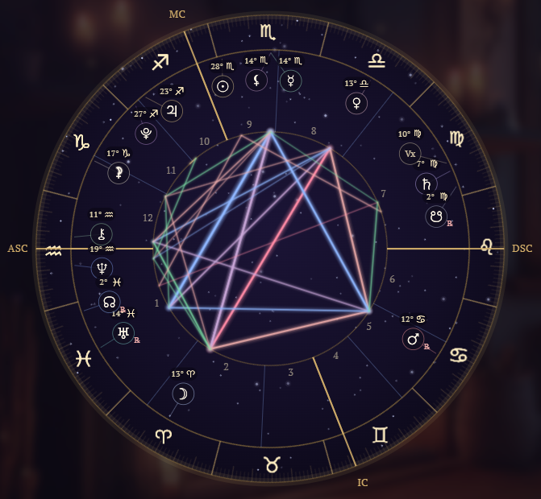
Десять космических сил, формирующих историю
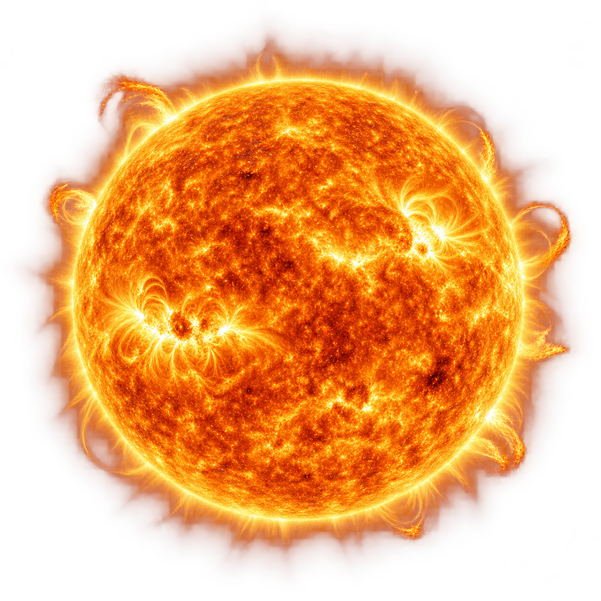
Сильная воля, огромный внутренний потенциал, индивидуализм, тяга к мистике и оккультным наукам. Скорпионы всю жизнь борются с внутренними противоречиями: одна часть стремится к возвышенному, другая к низкому. Самозащита у них одна: настороженность и замкнутость.
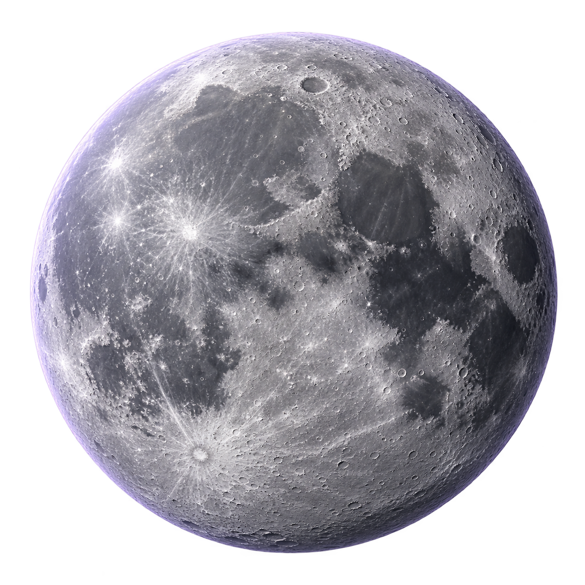
Большая активность души и чувств. Подпитываемая марсианской энергией, Луна вынуждает человека к напряжённой чрезмерной деятельности. Большое честолюбие, импульсивность, сильные страсти, страсть к сенсациям. Девиз — «всё или ничего».
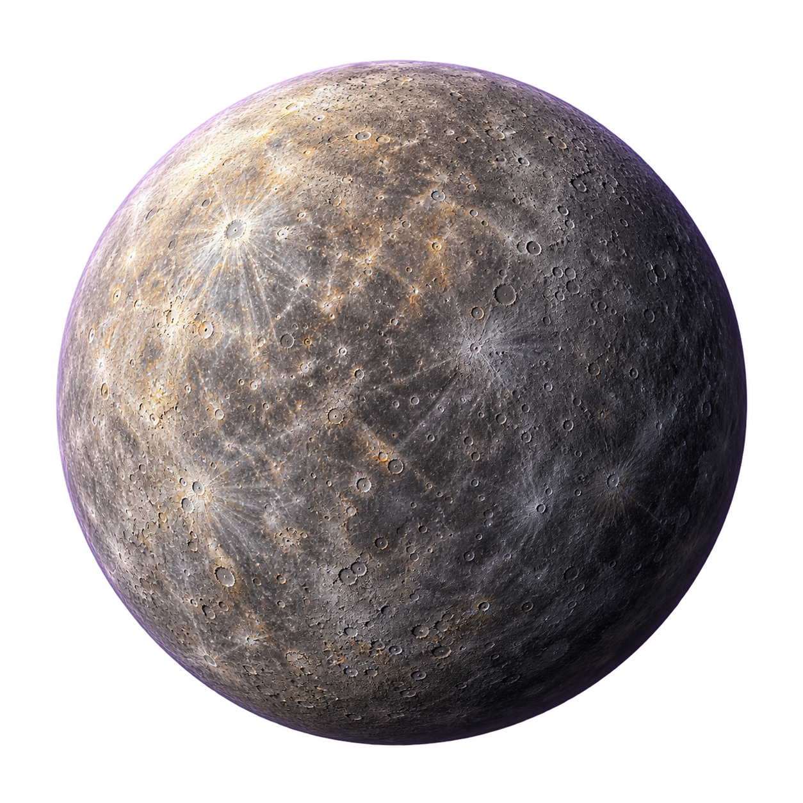
Превосходный интеллект, проницательность, дар убеждения, острый, резкий, боевой, даже агрессивный тип мышления. Находчивость, остроумие, изобретательский дар. Ум психолога, чутьё сыщика, острота критика. Особая магия слова, таинственность и неуловимость. Интерес ко всему тайному.
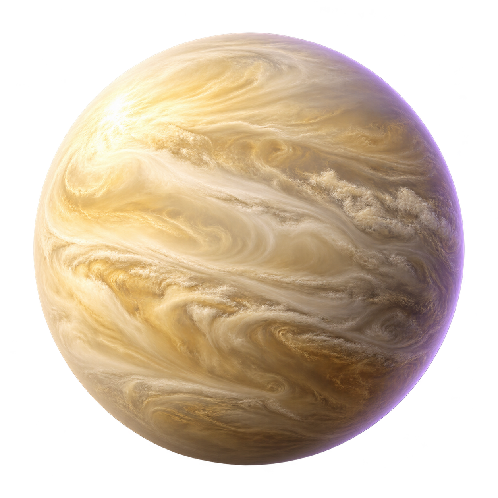
Домицил. Утончённые чувства, стремление к внутренней и внешней гармонии. Тонкая, добрая, нежная и любвеобильная душа. Сильное эстетическое чувство, деликатность, учтивость, беспредельное дружелюбие. Часто улучшают своё положение через удачный брак.
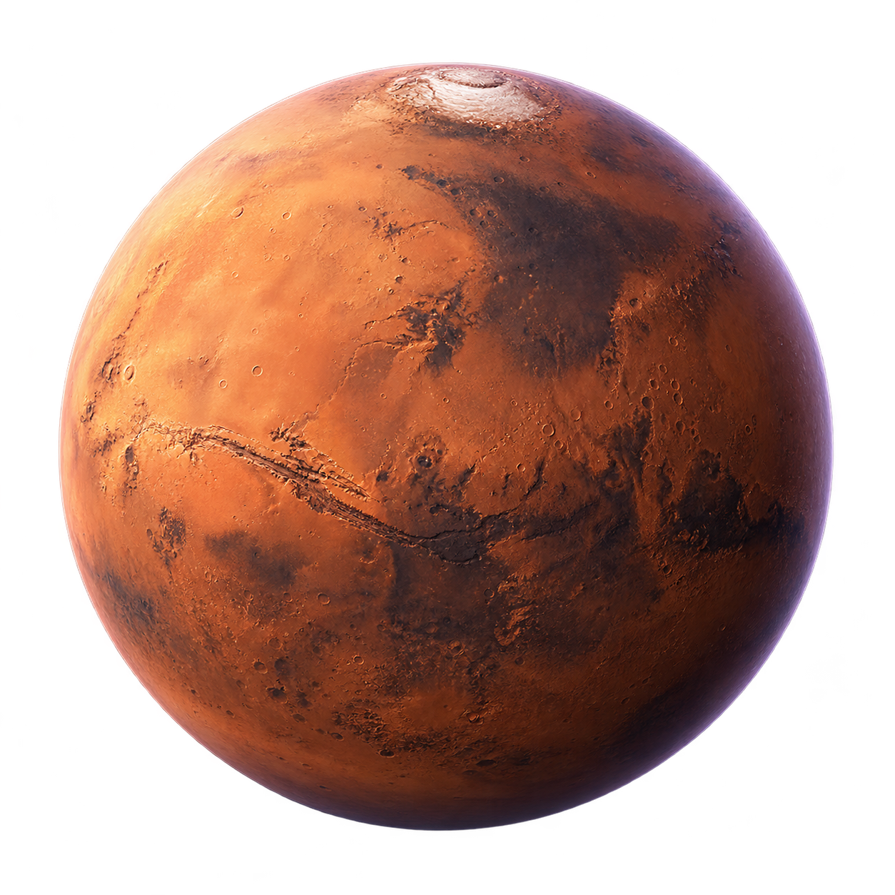
Падение. Действие через эмоции, защиту дома и семьи. Капризность воли, зависимость от настроения. Сильная привязанность, ревность. При поражении: истеричность, скрытая агрессия.
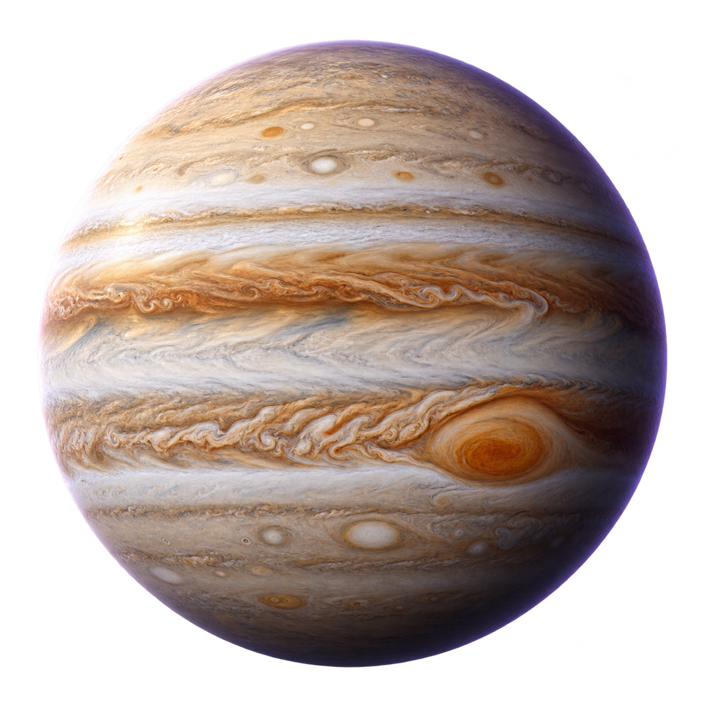
Домицил; философ, миссионер, путешественник. Юпитер в Стрельце раскрывается полностью: широта взглядов, любовь к дальним странам, тяга к высшему знанию, дух проповедника.
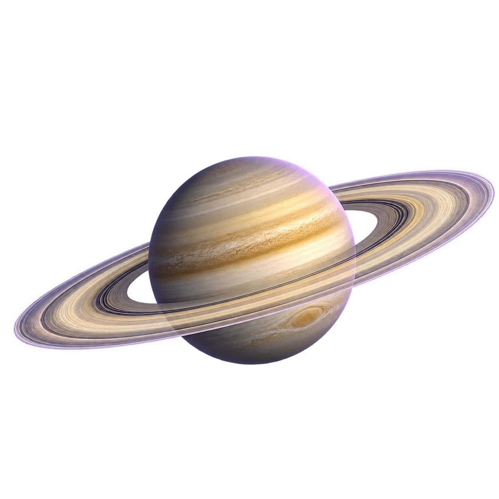
Сатурн в Деве усиливает аналитические и методические качества знака. Человек становится педантичным мастером деталей, незаменимым специалистом в своей области. Сильное чувство долга, любовь к точной работе, склонность к научной или медицинской деятельности.
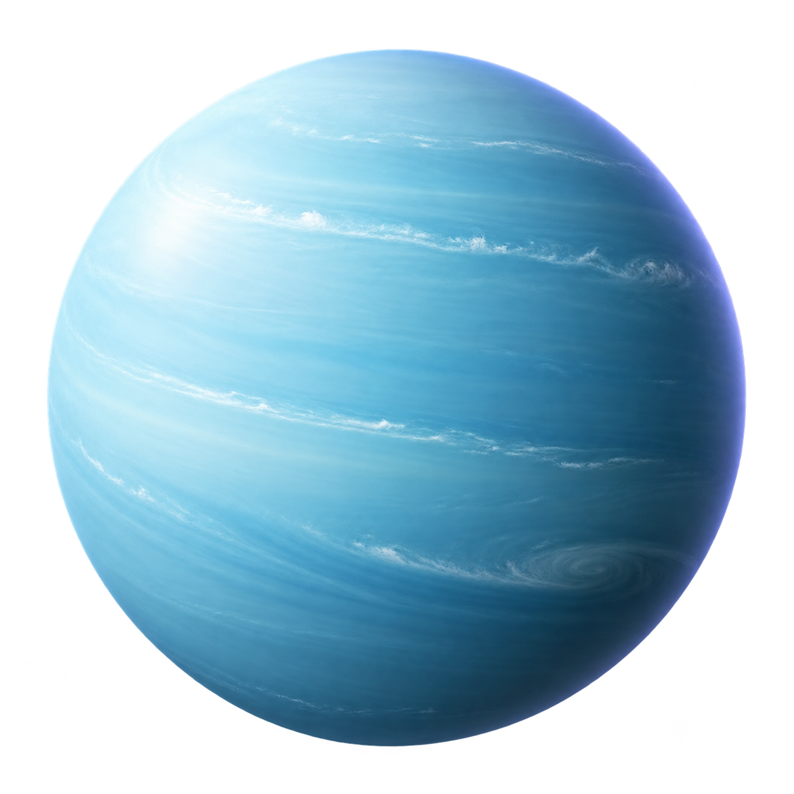
Эпоха духовных революций, развития мистических и нетрадиционных течений. Поколение, чувствующее тонкие планы и работающее с темами коллективного бессознательного.
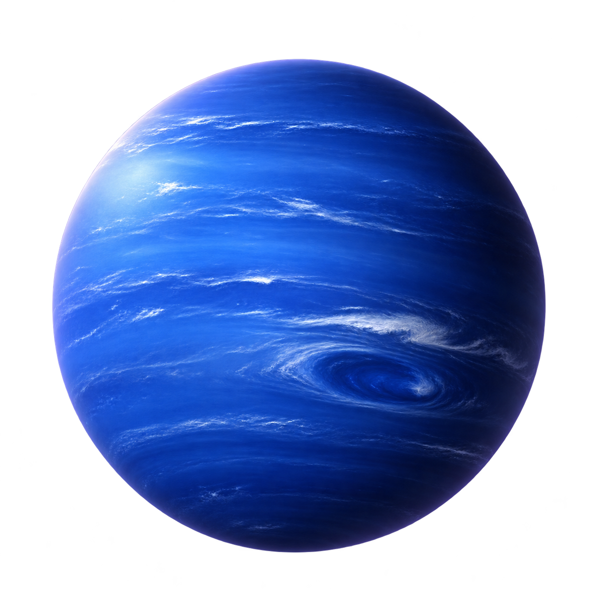
Экзальтация. Эпоха новой духовности, глобальных мистических движений, технологизации сознания (интернет, виртуальные миры). Нептун в экзальтации работает максимально.
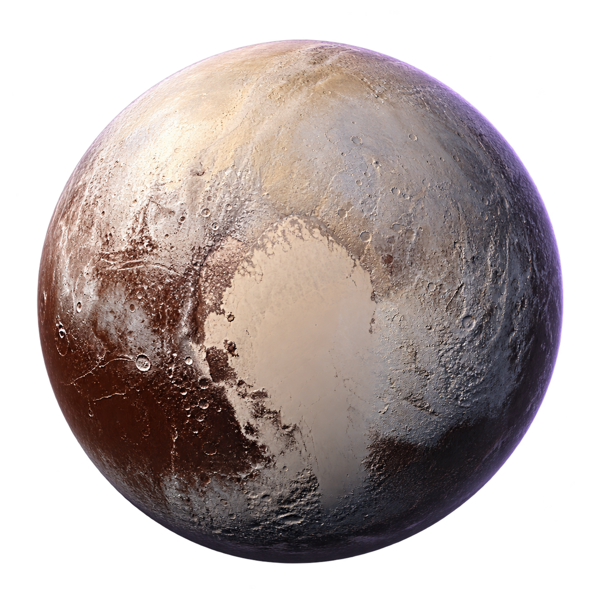
Поколение глобализации и идеологического обновления (1995–2008). Плутон в Стрельце трансформирует религию, философию, образование, мировые связи.
Асцендент
Овен
26°34′
Внешний облик и первое впечатление. Первое впечатление — напор и уверенность в себе. Атлетическое телосложение, длинная шея, острый пронзительный взгляд. На лице часто заметный шрам, выразительный нос, густые брови. Волосы жёсткие — каштановые, рыжие или льняные, глаза серо-зелёные или голубые. В контакт входит первым, ждать не умеет, компромисса не признаёт. Личность оформляется рано: своего пика достигает уже к 25–30 годам.
Середина неба
Козерог
13°06′
Публичная роль и вершина карьеры. Карьера долгая, поэтапная, с ясной вертикалью. Профессии: государственная служба, крупные корпорации, управление, строительство, всё, где нужна ответственность и терпение. Признание приходит поздно — часто после 40 лет — но приходит прочно и надолго. Не любит демонстративности, ценит должность и результат. Публичный образ — серьёзный, взрослый, консервативный. Один из немногих, кто растёт до самой старости.
Владыка гороскопа
82 / 100
Карта философа-учителя, устремлённая к росту и смыслу. Через Юпитер — знание, вера, путешествие, покровительство. Судьба ведёт туда, где нужно учить, наставлять, расширять горизонт: педагогика, право, издание, международное дело, крупный бизнес. Успех приходит через щедрость, а не через мелочный расчёт. Часто в жизни появляется покровитель или, наоборот, сам становится покровителем для других. Периоды сильных транзитов Юпитера — время удачи и подъёма.